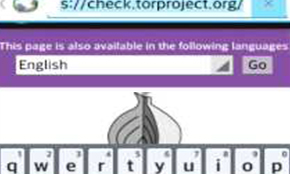
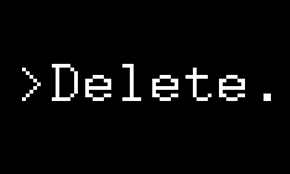
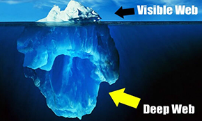

É crime acessá-la?
Só é crime a proriferação do conteúdo obscuro da Deep Web, apenas acessá-la não é ilegal.
É possível acessar em dispositivos móveis?
Sim, é possível. Incluse há um browser Tor mobile.

Como acontecem os pagamentos das compras?
Por meio de Bitcoin.
A moeda virtual permite aos usuários
conduzir transações no anonimato, porém, o seu uso está constantemente relacionado ao comércio de drogas ilegais.
A Deep Web pode ser deletada?
Uma vez que a Deep Web é a designação dada ao conteúdo de milhares e milhares de bases de dados, não parece possível que seja deletada. E não possuem razões para isso.

Tor?
O famoso Tor é o que vai possibilitar sua entrada, os links da D.W. não são acessíveis pelos browser, o Tor vai permitir sua entrada e seu anônimato, modificando seu IP.
Tem coisa boa?
Logico, apenas é apresentado o que procura. Muito conteúdo obscuro e uma boa parcela interessante, é claro. Para aqueles curiosos, que gostam do "sobrenatural" a vasta parcela de conteúdos irão lhe apresentar tudo de mais obscuro que é barrado na surface.
Porém... Há diversas documentações e demais fontes de conteúdos, que normalmente surgem primeiro no sub-mundo na internet.
Qual o tamanho da Deep Web?
Não tem como dimensionar a Deep Web,todo conteúdo não acessível é considarado como conteúdo dela. Nomearam como Deep (Obscuro) por certos conteúdos que podem ser encontrados por lá devido ao anonimato das Redes Tor, I2P e outras, e tem conteúdo que dificilmente teremos acesso.
